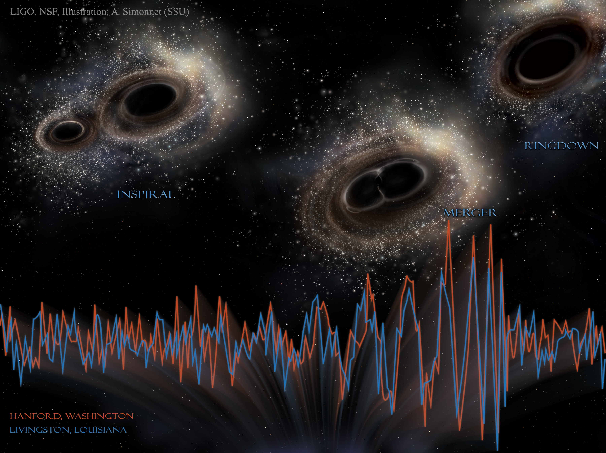

Welcome!
I am an Assistant Professor at the Chennai Mathematical Institute (CMI), specializing in gravitational-wave astronomy. Gravitational waves have emerged as a powerful tool for probing astrophysics as well as fundamental physics through the universe’s most compact objects, neutron stars and black holes.
My past and current work span waveform modeling of compact binary mergers, tests of General Relativity, gravitational lensing of gravitational waves, compact-binary population inference, and the development of advanced data-analysis tools for the LIGO–Virgo–KAGRA–LIGO India (LVK–LI) network and future detectors such as the Einstein Telescope and Cosmic Explorer. I am also keen to explore a variety of other topics in gravity and astrophysics.
This website provides an overview of my past and current research, publication list, scientific talks, and CV.

Credit: LIGO, NSF, Aurore Simonnet (Sonoma State University)